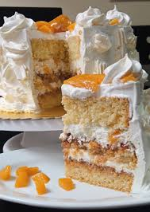

Uruguayan Chaja Dessert

The Chajá is a traditional Uruguayan dessert known for its light textures and delicate flavors.
It was created in 1927 by Orlando Castellano in the city of Paysandú.
The dessert is named after the Chajá bird, a native species closely associated with Uruguay.
Ingredients
For the sponge cake
- 5 eggs (at room temperature)
- 1 cup caster sugar
- 1½ cup flour , sifted
- 2 tablespoons butter (for the mold)
- 1 tablespoon flour (for the mold)
For the meringue
- 3 egg whites (at room temperature)
- ¾ cup icing sugar , sifted
- 1 cup caster sugar
- 1 pinch of salt
For the filling
- 2 lb peach halves in syrup (canned)
- 2½ cups heavy whipping cream (very cold)
- 1 cup icing sugar , sifted
- 1 lb dulce de leche
Steps
Sponge cake
- Preheat the oven to 400F/200C.
- In the bowl of a stand mixer, beat the eggs and the caster sugar at high speed until they whiten and triple in volume.
- Add the sifted flour and, using the flat beater, mix at low speed for 30 seconds.
- Grease an 8-inch (20cm) round cake pan with high edges and sprinkle with flour.
- Tilt the pan and turn the pan on itself get rid of the excess flour.
- Pour the batter into the mold and bake for 12 minutes at 400F/200C, then lower the temperature to 350F/180C,
and bake for another 30 minutes.
- Remove the cake from the oven and wait about 10 minutes before unmolding.
- Unmold and let cool completely.
Meringue
- Preheat the oven to 210F/100C.
- Using a large black pen, trace a circle of the same size as the sponge pan (8 inches/20cm) on a parchment paper,
turn it over and place it on a baking sheet.
- Add the egg whites into the bowl of a stand mixer.
- Add a pinch of salt over the egg whites and beat them.
- When the mixture begins to foam, add the caster sugar gradually.
- Once the whites are stiff and shiny, stop whipping and fold in the icing sugar delicately with a spatula, without breaking
the egg whites.
- Using a pastry bag and a large plain pastry tube, pipe the meringue in a circular motion, so that it fills the circle painted
on the parchment paper on a single layer.
- With the rest of the meringue, make some meringues discs.
- Bake for two hours at 210F/100C.
- After two hours of baking, increase the oven temperature to 270F/130C, and bake for another 5 minutes.
- Turn off the oven and leave the meringues inside until they cool completely.
Cream
- Place the heavy whipping cream in the freezer for 20 minutes.
- Pour the cream into the bowl of a stand mixer.
- Beat the whipped cream at medium speed for about 10 minutes by incorporating the icing sugar gradually.
Assembly of the chajá
- Drain the peach halves and reserve their syrup in a bowl.
- Slice 4 halved peaches (to cover the top of the cake) and cut the remaining peaches in small cubes.
- Slice the sponge cake in 3 equal layers.
- Place the first layer of sponge cake in a 12-inch (30cm) pie dish.
- Brush the first layer of sponge cake with the reserved peach syrup.
- Then spread the dulce de leche with a spatula.
- Place the second layer of sponge cake and brush it with the syrup. Cover with a generous layer of whipped cream.
- Cover the whipped cream with half of the diced peaches.
- Place the meringue disk on the peaches and press lightly.
- Cover again with whipped cream and place the rest of the diced peaches on top.
- Place the third layer of sponge cake on top and press lightly so all the fillings get compacted.
- Cover all the surface of the cake with whipped cream.
- Break the small circles of meringues and carefully glue them on all sides of the cake.
- Arrange the sliced peaches carefully on the surface of the cake.
- Pipe all the remaining cream with a pastry bag with a fluted tip to draw a tube around the top of the cake.
- Refrigerate the chajá for at least 6 hours before serving.